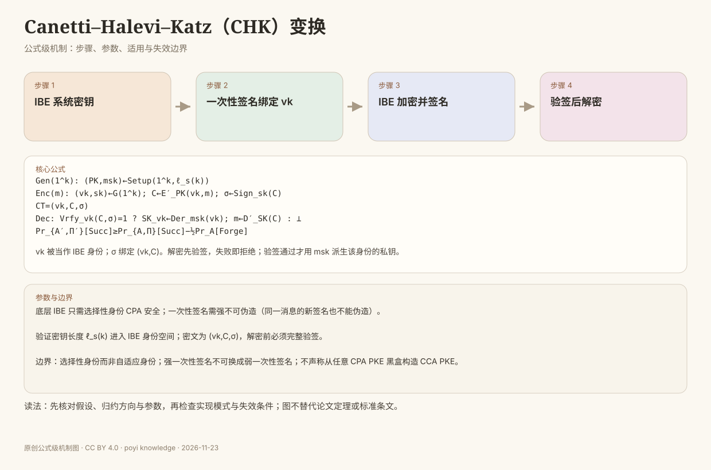
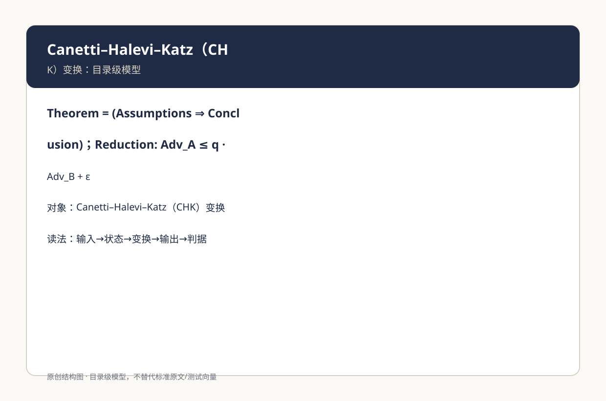

原理与机制
定理：Canetti–Halevi–Katz（CHK）变换（Canetti–Halevi–Katz (CHK) Transform）。### 构件
取 IBE Π′=(Setup,Der,E′,D′)，它只需对选择性身份 CPA 安全；取强一次性签名 Sig=(G,Sign,Vrfy)。构造 PKE Π=(Gen,E,D)：
Gen(1^k) 运行 Setup(1^k,ℓ_s(k)) 得到 (PK,msk)，公钥 PK、私钥 msk。加密 m：先 G(1^k)→(vk,sk)，再 C←E′PK(vk,m)，σ←Sign_sk(C)，输出 (vk,C,σ)。解密：先检查 Vrfy_vk(C,σ)=1，否则拒绝；通过后 SK_vk←Der_msk(vk)，m←D′{SK_vk}(vk,C)。### 定理
若 Π′ 选择性身份 CPA 安全，且 Sig 强一次性不可伪造，则 Π 是 CCA 安全 PKE。归约中定义 Forge 为敌手对 vk* 提交新 (C,σ) 且验签通过的事件，并有
Pr_{A′,Π′}[Succ]≥Pr_{A,Π}[Succ]−½Pr_A[Forge]。因为 Forge 可忽略，A 的 CCA 优势也回到 1/2 附近。

为什么重要
CHK 变换把“身份”从用户标识改成一次性验证密钥 vk。挑战密文绑定 vk*；敌手的解密查询若 vk≠vk*，就落到另一个身份，IBE 的 CPA 安全仍可回答；若 vk=vk*，则任何新的有效 (C,σ) 都直接给出强一次性签名的伪造。
应用与实例
1.选 IBE：确认其安全性是选择性身份 CPA，且身份空间能容纳 ℓ_s(k) 位的 vk。2.选签名：使用强一次性签名，密钥只签一个 C；不得复用 vk/sk。3.加密：先加密再签名，签名覆盖完整 C；不要把 σ 放进 IBE 明文。4.解密：先完整验签，再派生身份私钥并解密；验签失败不得泄漏任何解密信息。### 不能怎么用
不能把弱一次性签名当作强一次性签名；不能让两个密文复用同一 vk；不能在验签前调用 IBE 解密；不能把选择性身份安全当成自适应身份安全。

边界与攻击面
1.安全模型：底层 IBE 只有选择性身份 CPA 安全；若需要自适应身份，必须换更强 IBE 或额外技术。2.签名强度：若签名只是弱一次性不可伪造，敌手可在同一 C 上改 σ，Forge 事件不再被排除。3.身份空间：ℓ_s(k) 太短、vk 编码不唯一或验签密钥可替换，会破坏 vk 到身份的绑定。4.归约边界：证明只给出存在性构造；不保证具体 IBE 的效率、密钥托管、侧信道或实现安全，也不声称从任意 CPA PKE 黑盒得到 CCA PKE。
历史与背景
论文以 ePrint 2003/182 公开，作者为 Ran Canetti、Shai Halevi 与 Jonathan Katz；该条目录名沿用 Canetti–Halevi 的简称，正文按三位作者的 CHK 变换展开。论文给出从选择性身份 CPA IBE 到 CCA PKE 的标准模型构造，并扩展到 BTE/HIBE。
技术参数与复算边界
该条目的形式模型是 (\Pr[\mathrm{Bad}_A(\lambda)]\le \varepsilon(\lambda))。输入：输入：Canetti–Halevi–Katz（CHK）变换的公开参数、密钥/随机数与消息；变量说明：Bad 为归约中定义的失败事件，ε 为可忽略函数。 预期输出：按 Canetti–Halevi–Katz（CHK）变换 的规范执行后得到可验证的输出或可比较的优势界。 复算必须给出输入、步骤、输出和单位；示例只演示流程，不替代标准测试向量。
复杂度由密钥长度、分组/状态规模、轮数、随机数质量和敌手模型共同决定；参数越界、版本差异与实现侧信道都可能使公式结论失效。已登记限制：该条目只给出形式模型与可复算步骤，不声称已完成生产实现、侧信道认证或第三方安全评估。
逐步示例与核验
形式模型与复算步骤
[\Pr[\mathrm{Bad}_A(\lambda)]\le \varepsilon(\lambda)]
Canetti–Halevi–Katz（CHK）变换的公开参数、密钥/随机数与消息；变量说明：Bad 为归约中定义的失败事件，ε 为可忽略函数。1.定义失败事件。2.构造归约把攻击者转成困难问题求解器。3.证明失败概率上界。边界：公式只覆盖已登记的参数与假设；参数取值、标准版本和实现细节仍以来源为准。
参考出处
- Wikipedia search entry for Canetti–Halevi–Katz（CHK）变换. https://zh.wikipedia.org/w/index.php?search=Canetti%E2%80%93Halevi%E2%80%93Katz%EF%BC%88CHK%EF%BC%89%E5%8F%98%E6%8D%A2
- Handbook of Applied Cryptography (Menezes, van Oorschot, Vanstone). https://www.cacr.math.uwaterloo.ca/hac/